風與三種水平作用力
- 空氣受外力作用而運動，就是風。
- 垂直方向：氣壓梯度力（往上）與重力大致平衡，所以大氣不容易有劇烈的垂直運動。
- 本單元說的「風」都是水平方向，受三種力影響：氣壓梯度力、科氏力、摩擦力。
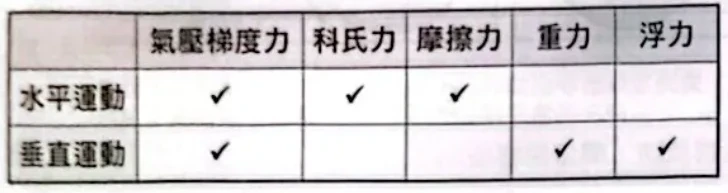
水平運動受氣壓梯度力、科氏力、摩擦力；垂直運動則是氣壓梯度力與重力、浮力的平衡原講義PDF第13頁・印刷第115頁・點圖放大
氣壓梯度力
- 風向：空氣被氣壓梯度力推著，由高壓流向低壓。
- 風速：單位距離內氣壓差愈大（等壓線愈密），氣壓梯度力愈大，風速愈快。
- 方向恆垂直等壓線，由高壓指向低壓。
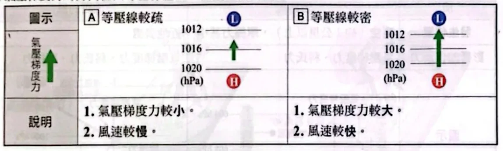
等壓線愈密 → 氣壓梯度力愈大 → 風速愈快；箭頭恆垂直等壓線，由高壓指向低壓原講義PDF第13頁・印刷第115頁・點圖放大
科氏力
- 地球自轉，使運動中的物體相對地面往右或往左偏移；造成偏移的「力」叫科氏力，是一種假想力。
- 緯度愈高，科氏力愈大：兩極最大、赤道為 0。
- 風速愈快，科氏力愈大；空氣靜止就沒有科氏力。
- 科氏力永遠和風向垂直：北半球指向運動方向的右方，南半球指向左方。
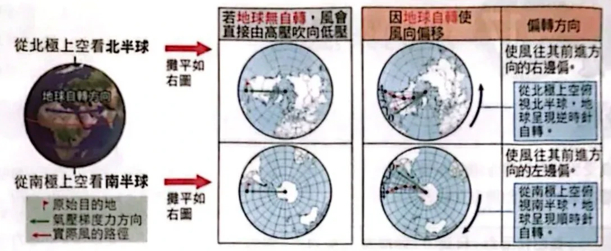
從極區上空看：北半球逆時針自轉，風往前進方向的右邊偏；南半球順時針自轉，往左偏原講義PDF第14頁・印刷第116頁・點圖放大
摩擦力
- 近地面的風受地表摩擦而變慢。
- 風速變慢 → 科氏力變小 → 偏轉角度變小（間接影響風向）。
- 摩擦力方向與風向相反。
地轉風與近地面的風
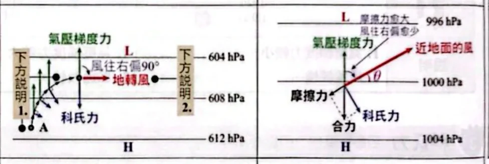
左：高空地轉風，氣壓梯度力＝科氏力，風平行等壓線；右：近地面多了摩擦力，風斜穿等壓線吹向低壓原講義PDF第14頁・印刷第116頁・點圖放大
三步驟判斷風向
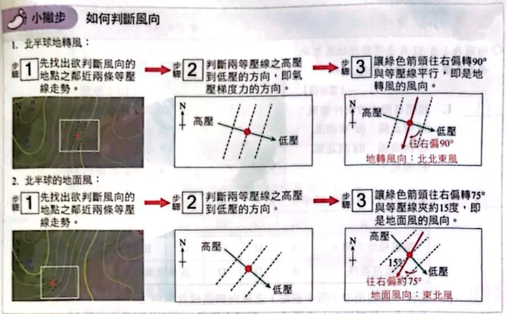
判斷風向：找等壓線 → 畫氣壓梯度力 → 北半球往右偏（地轉風90°、地面風約75°）原講義PDF第15頁・印刷第117頁・點圖放大
- 找出該點附近兩條等壓線的走向。
- 畫氣壓梯度力：垂直等壓線，由高壓指向低壓。
- 北半球往右偏：地轉風偏 90°（平行等壓線）；地面風偏約 60～75°（和等壓線夾 15～30°）。
高壓與低壓
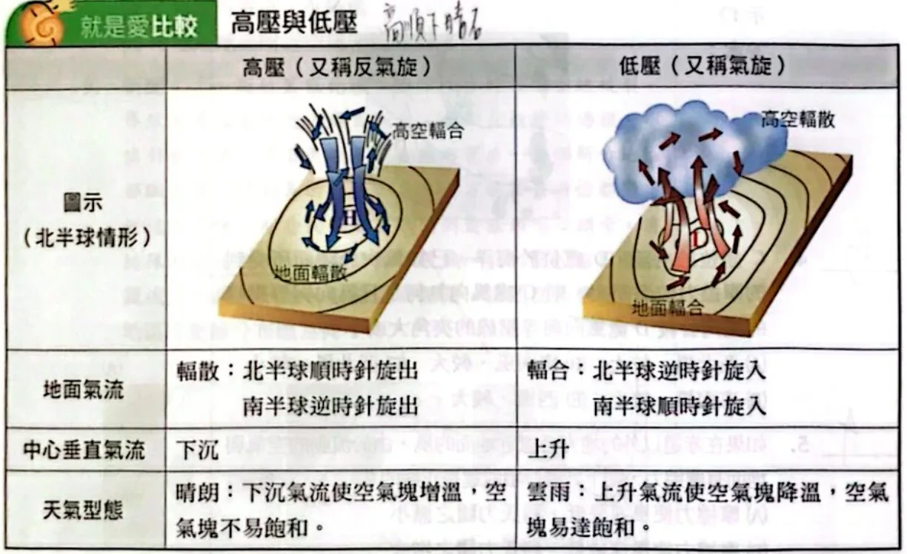
北半球高壓順時針向外輻散、中心下沉、晴朗；低壓逆時針向內輻合、中心上升、雲雨原講義PDF第15頁・印刷第117頁・點圖放大
小試身手1–4：冬季地面天氣圖
附圖為 1 月 17 日臺灣附近的地面天氣圖：大陸上有高壓（H），日本東方有低壓（L）；A 在東北角等壓線最密處，B 在大陸高壓附近，C 在華南內陸，D 在菲律賓東方海上。
請問臺灣大致吹什麼風？
(A) 東北風 (B) 東南風 (C) 西南風 (D) 西北風 (E) 南風
看答案與詳解收起
答A。
解- 1 月，大陸冷高壓在西北、海上低壓在東方 → 臺灣附近等壓線大致呈東北—西南走向。
- 氣壓梯度力：由西北（高壓）指向東南（低壓）。
- 北半球地面風往右偏 60～75° → 往西南吹 → 從東北吹來 ＝ 東北風（冬季東北季風）。
請問 A～D 何處氣壓梯度力最大？何處風速最快？
| 選項 | (A) | (B) | (C) | (D) | (E) |
|---|
| 梯度力最大 | A | D | A | D | B |
|---|
| 風速最快 | A | D | D | A | B |
|---|
看答案與詳解收起
答A。
解- 氣壓梯度力看等壓線疏密：A 位在東北角，等壓線最密 → 梯度力最大。
- 風速主要由梯度力決定；A 又在海面附近，摩擦力小 → 風速也最快。
- D 雖在海上（摩擦小），但等壓線稀疏，梯度力小，風不會比 A 快。
小結風速：先看等壓線疏密，再看摩擦（陸地慢、海上快）。
請在圖中畫出 D（菲律賓東方海上）之風向與造成此風向之三力方向（氣壓梯度力標 p、科氏力標 c、摩擦力標 f）。
看答案與詳解收起
答p 指向東南（垂直等壓線、指向低壓）；風往西南吹（東北風），與等壓線夾一小角度偏向低壓；c 垂直風向、指向風的右方（西北）；f 與風向相反（指向東北）。
解- D 附近等壓線呈西南—東北走向，高壓在西北（大陸），所以 p 往東南。
- 北半球往右偏、但有摩擦偏不到 90° → 風往西南吹，斜穿等壓線、略偏向低壓一側。
- c 永遠垂直風向、在風的右邊 → 指向西北。
- f 永遠和風向相反 → 指向東北。
- 檢查：c 與 f 的合力剛好和 p 平衡（反向），三力平衡風才會穩定吹。
小結畫三力：p 垂直等壓線指低壓；c 在風的右邊垂直；f 與風相反。
C 處位於內陸，D 處位於海洋，已知風吹過陸面所受到的摩擦力較海面大，則 C 處風向為何？且風向與等壓線的夾角會較 D 處風向與等壓線的夾角大或小？
(A) 西北風、較大 (B) 東南風、較大 (C) 西北風、較小 (D) 東南風、較小 (E) 西風、較大
看答案與詳解收起
答B。
解- C 附近等壓線大致呈西北—東南走向，高壓在 C 的東北方（大陸高壓）→ 梯度力指向西南。
- 北半球往右偏（小於 90°）→ 風往西北偏西吹 → 從東南吹來 ＝ 東南風。
- 陸地摩擦大 → 風速慢 → 科氏力小 → 偏得少 → 與等壓線的夾角較大。
小試身手5–9
如果在赤道以外的地方考慮近地面的風，由於流動的空氣與地面有摩擦力，則下列哪一項敘述是正確的？
(A) 摩擦力使風速降低，科氏力隨之減小 (B) 摩擦力使風速降低，科氏力隨之增大 (C) 摩擦力對風速沒影響，但對科氏力影響很大 (D) 摩擦力對科氏力沒影響，但對風速影響很大 (E) 摩擦力對風速和科氏力都沒有影響
看答案與詳解收起
答A。
解摩擦力與風向相反 → 風速變慢；科氏力大小和風速成正比 → 科氏力也變小。這就是摩擦力「間接」影響風向的原因。
氣壓梯度力和科氏力平衡時所吹的風稱為地轉風。北半球某地高空的地轉風是吹北風，假設從地面到高空的等壓線分布型態不變，則地面風最有可能吹什麼風？
(A) 北風 (B) 東風 (C) 西南西風 (D) 東北東風 (E) 北北西風
看答案與詳解收起
答E。
解- 高空吹北風 → 空氣往南走，等壓線呈南北走向。
- 北半球地轉風：背風而立，低壓在左。面向南方時左手邊是東 → 東邊低壓、西邊高壓 → 梯度力指向東。
- 地面風：從梯度力（往東）往右偏約 60～75° → 往南南東吹 → 從北北西吹來。
- 也可以這樣想：地面風比地轉風「再偏向低壓一點」→ 北風稍微偏向東邊的低壓 → 北北西風。
附圖為某地的地面天氣圖，甲、乙、丙為高壓或低壓中心，箭頭為標示地之風向，下列敘述哪些正確？
(A) 附圖位於北半球 (B) 甲地有下沉氣流 (C) 乙地多為陰雨天 (D) 丙地多為晴朗的天氣 (E) 乙地東側箭頭處的風速比西側箭頭處的風速快
原圖中甲、乙、丙旁的 H、L 是手寫筆記，先別看，自己推。
看答案與詳解收起
答B、C。
解- 先看甲：甲西側的風往南（略偏外）吹。若甲是高壓、北半球應順時針 → 西側應往北吹，不合；南半球高壓逆時針 → 西側往南吹 ✓。所以這是南半球，甲是高壓（A 錯）。
- 乙：東側風往西南吹進乙、西側往東北吹進乙 → 氣流向內、順時針 → 南半球的低壓。丙：東側往南吹，也是順時針 → 低壓。
- B：甲是高壓，中心下沉 ✓。
- C：乙是低壓，上升氣流 → 多陰雨 ✓。
- D：丙也是低壓，不會「多為晴朗」✗。
- E：乙西側等壓線比東側密 → 西側風較快 ✗。
小結判斷半球：看高（或低）壓周圍氣流是順時針還是逆時針。
假設附圖為溫度不同所導致甲、乙兩地氣壓差異之垂直等壓線分布圖：甲地上方的等壓面間距較大、往乙地逐漸收攏；最低一條等壓面在甲地較低、在乙地較高。關於兩地之敘述何者正確？
(A) 甲地近地面氣壓較高 (B) 乙地近地面氣溫較高 (C) 地面空氣為甲吹向乙 (D) 乙地應有垂直下沉氣流 (E) 甲地近地面附近空氣密度較高
看答案與詳解收起
答D。
解- 等壓面間距大 → 氣柱受熱膨脹 → 甲地較熱，乙地較冷。
- 近地面：最低的等壓面在乙地比較高 → 同一高度乙的氣壓較大 → 乙地面高壓、甲地面低壓（A 錯）。
- B 錯：乙較冷。E 錯：甲熱空氣密度較小。
- C 錯：地面風由高壓吹向低壓 → 由乙吹向甲。
- D 對：乙地面高壓 → 中心下沉；甲則上升，形成熱力環流。
小結地面：熱 → 低壓、上升；冷 → 高壓、下沉。（高空則相反）
新聞：「新竹某化纖工廠管線破裂起火……整個新竹地區都飄散著刺鼻惡臭，甚至南方的苗栗頭份都聞得到……」假設當日臺灣氣流方向趨於一致，請問當日臺灣所在地區等壓線分布應為何？
看答案與詳解收起
答B。
解- 臭味從新竹飄到南邊的頭份 → 風往南（西南）吹 → 吹北風或東北風。
- 逐一用「梯度力 → 往右偏」檢查：
- (A) 西 1012、東 1016 → 梯度力向西 → 右偏後往北吹 → 南風 ✗。
- (B) 西 1016、東 1012 → 梯度力向東南 → 右偏後往南、西南吹 → 東北風 ✓。
- (C) 梯度力向西南 → 右偏後往西北吹 → 東南風 ✗。
- (D) 北 1012、南 1016 → 梯度力向北 → 右偏後往東吹 → 西風 ✗。
- (E) 西 1012、東 1016（南北走向）→ 梯度力向西 → 往北吹 → 南風 ✗。
小結反推題：先由現象決定風往哪吹，再逐一用三步驟檢查選項。
本單元整理
下一節把風、高低壓與鋒面放進天氣圖，學會讀臺灣的季節天氣。
核對原講義全頁（地科2 PDF13–17）
本節對應印刷115–119頁（主題17 風向與風速，含小試身手1–9）。原頁有手寫答案與紅筆筆記，部分是錯的；本頁答案一律重新推導。
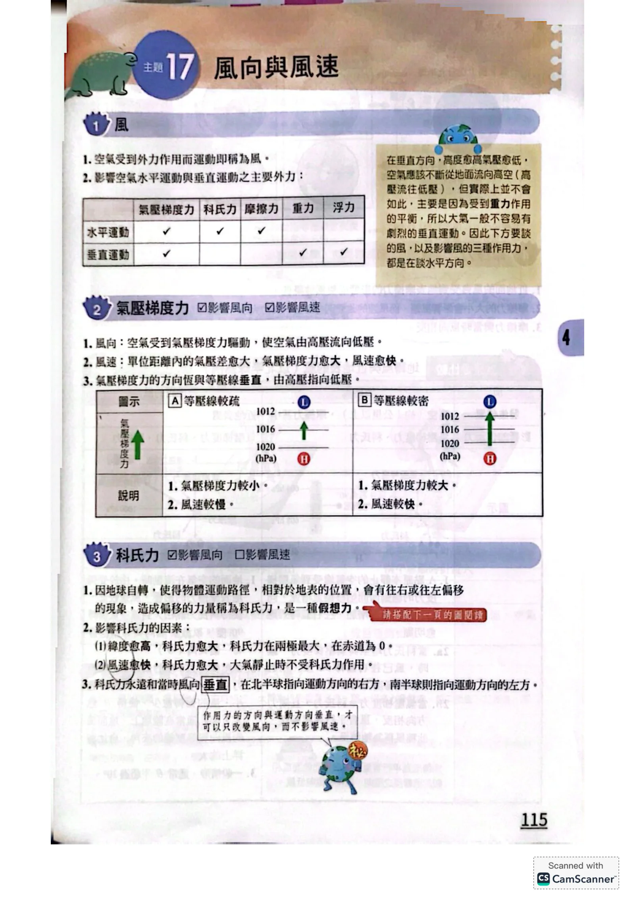
PDF第13頁／印刷第115頁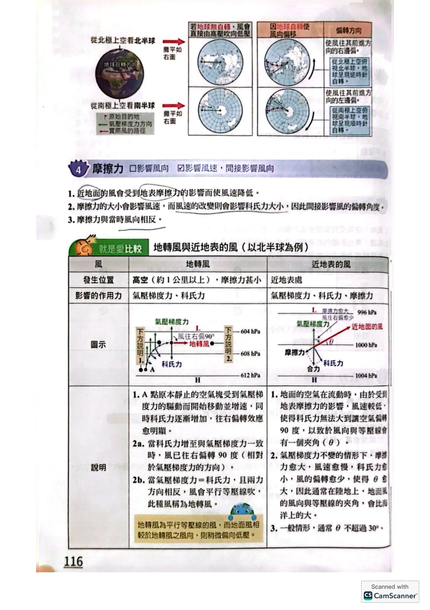
PDF第14頁／印刷第116頁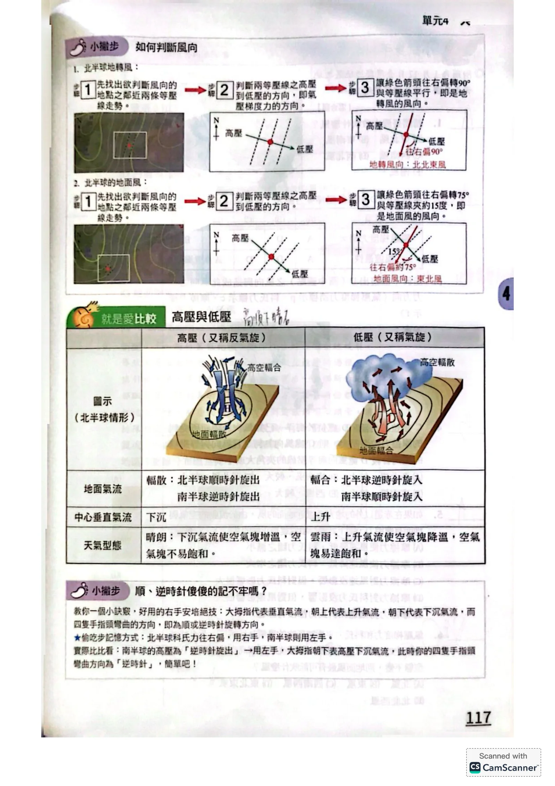
PDF第15頁／印刷第117頁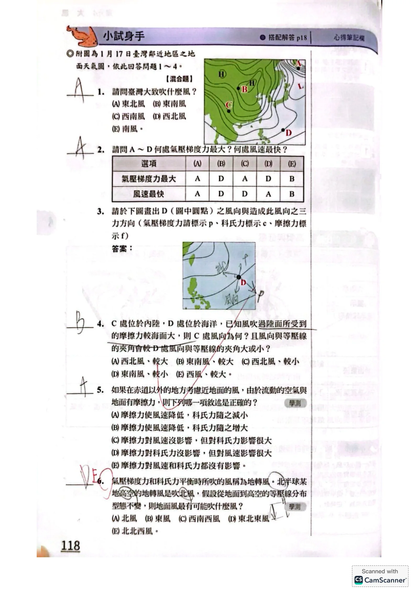
PDF第16頁／印刷第118頁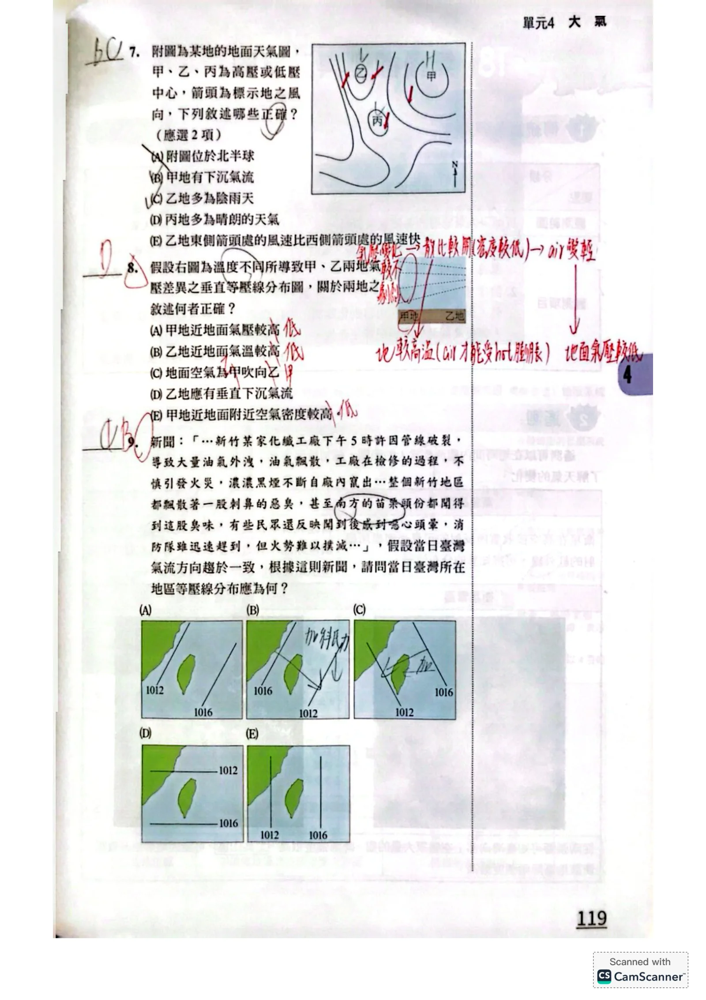
PDF第17頁／印刷第119頁